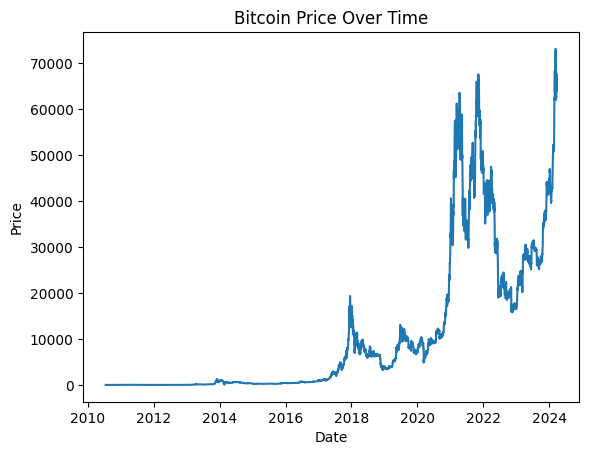
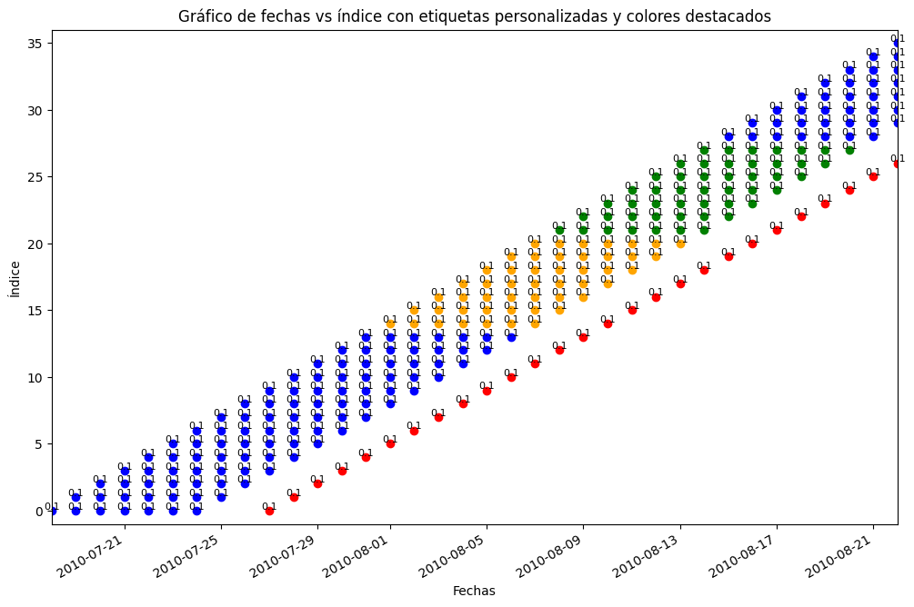
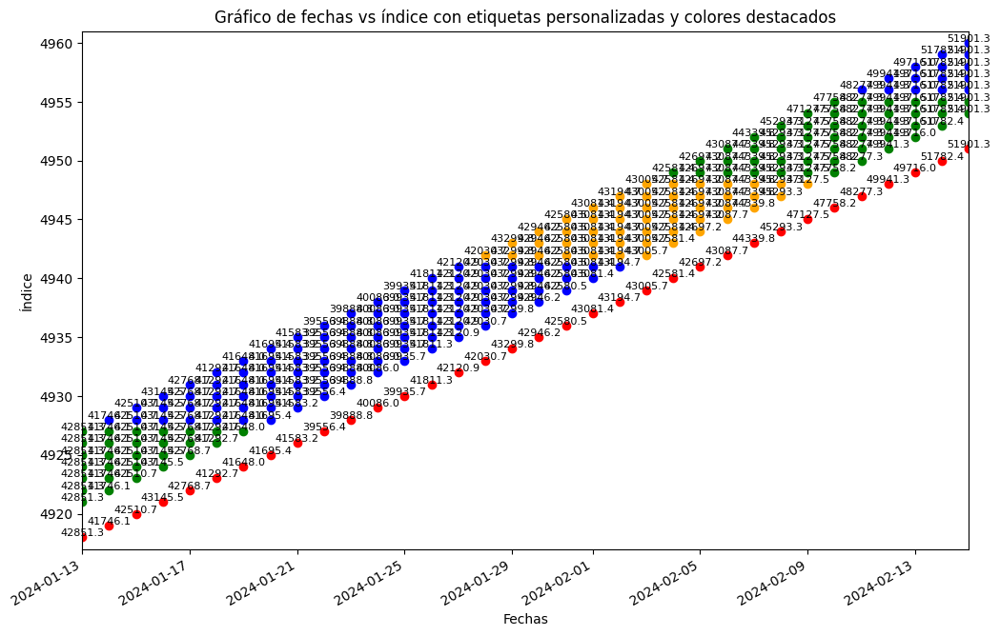
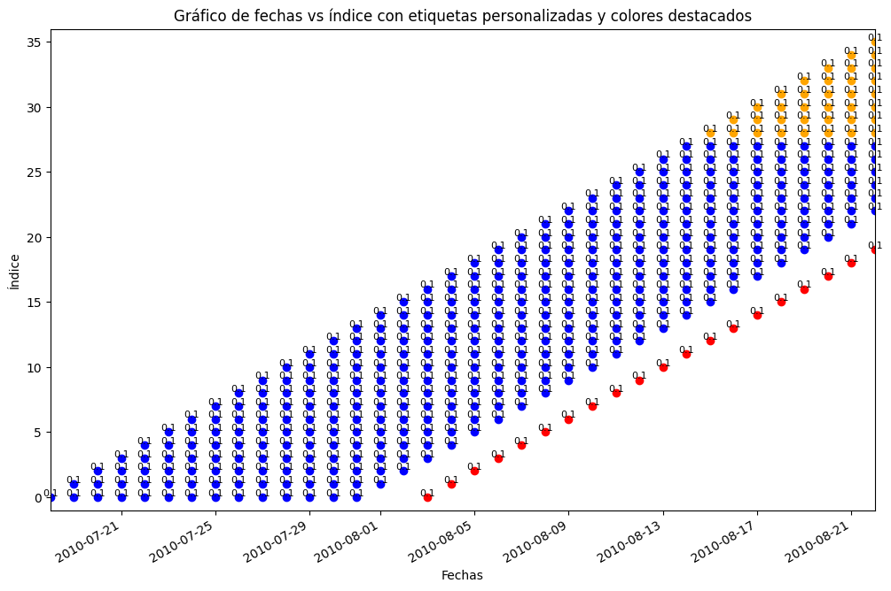
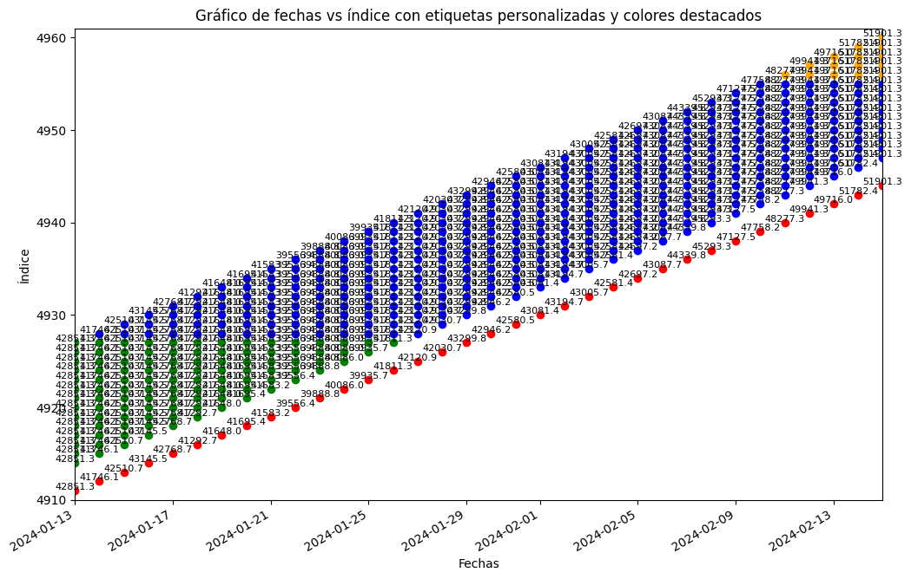
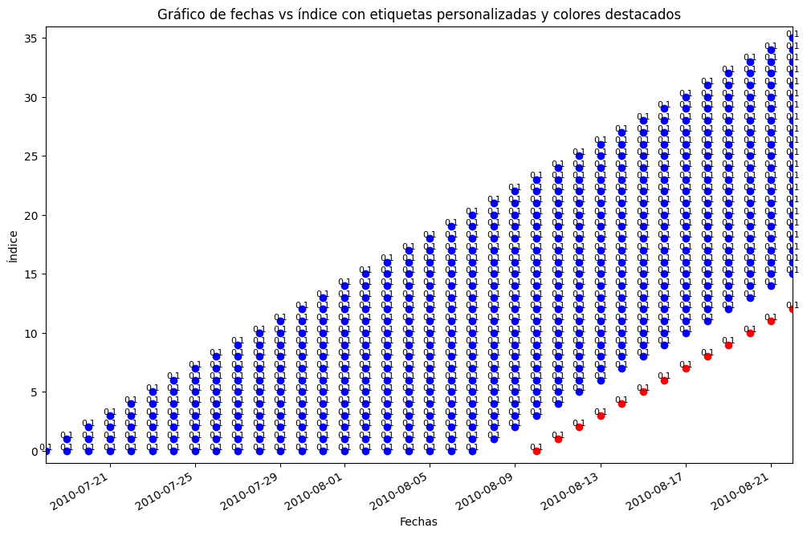
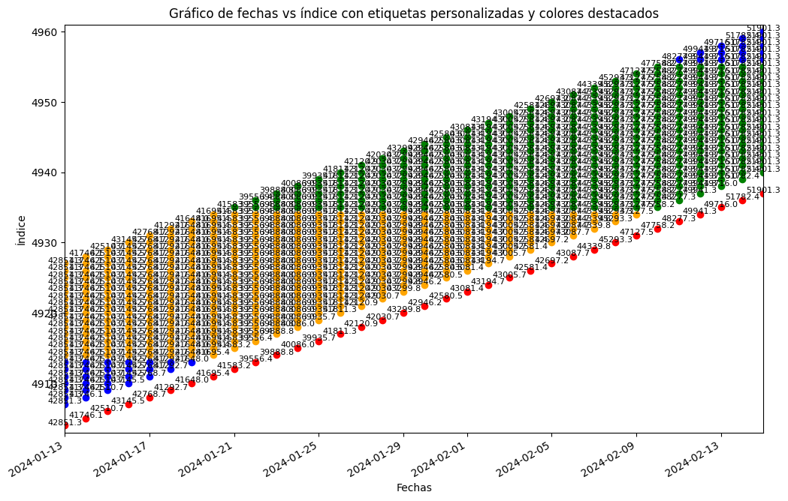
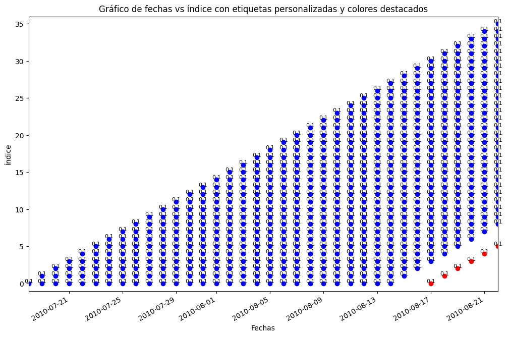
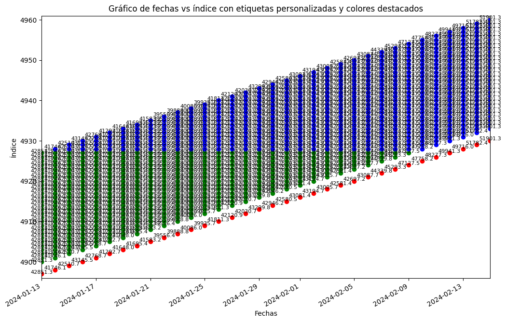

Deep Learning#
import pandas as pd
from matplotlib import pyplot as plt
# Leer el archivo y procesar los datos
df = pd.read_csv("C:/Users/FBA/OneDrive - Acesco/0. Personales/2. Profesional/20240416 - Maestria en Analítica de Datos/20240919 Series de Tiempo/Parcial/bitcoin.txt", delimiter=',')
# Convertir 'Price' a numérico eliminando comas
df['Price'] = df['Price'].str.replace(',', '')
df['Price'] = pd.to_numeric(df['Price'])
# Convertir 'Date' a formato datetime y establecer como índice
df['Date'] = pd.to_datetime(df['Date'])
df.set_index('Date', inplace=True)
# Ordenar el DataFrame por fecha
df = df.sort_values(by='Date', ascending=True)
# Graficar los precios
plt.plot(df.index, df['Price'])
plt.xlabel('Date')
plt.ylabel('Price')
plt.title('Bitcoin Price Over Time')
plt.show()
# Copiar la columna 'Price' a una nueva variable
df_price = df['Price'].copy()
# Mostrar las primeras filas de df_price
print(df_price.head(),df_price.tail())

Date
2010-07-18 0.1
2010-07-19 0.1
2010-07-20 0.1
2010-07-21 0.1
2010-07-22 0.1
Name: Price, dtype: float64 Date
2024-03-20 67854.0
2024-03-21 65503.8
2024-03-22 63785.5
2024-03-23 64037.8
2024-03-24 67211.9
Name: Price, dtype: float64
import numpy as np
import pandas as pd
# Función para crear las ventanas deslizantes y asegurar que siempre existan valores para los `tau` futuros
def create_sliding_windows(data, window_sizes, step_size, taus):
result_dict = {} # Diccionario para almacenar los DataFrames por `window_size`
for w in window_sizes:
all_combined_dfs = [] # Para almacenar resultados combinados para el tamaño de ventana actual
for t in taus:
X, y = [], []
for i in range(0, len(data) - (w + t), step_size):
X.append(data[i:i + w]) # Ventana de entrada
# Agregar `Tau_0` como el valor justo después de la ventana
tau_0_value = [data[i+w+t-1]]
# Obtener valores futuros para `tau`
future_values = [data[i + w + j] for j in range(1, t + 1)] # Valores futuros `tau` periodos por delante
# Combinar `Tau_0` con los valores futuros
y.append(tau_0_value)
# Crear DataFrames
df_X = pd.DataFrame(X)
df_y = pd.DataFrame(y, columns=[f'Tau_{t}'])
# Combinar DataFrames de la ventana y la salida de `tau`
df_combined = pd.concat([df_X, df_y], axis=1)
all_combined_dfs.append(df_combined)
# Combinar todos los resultados en un solo DataFrame para el `window_size` actual
final_df = pd.concat(all_combined_dfs, axis=0).reset_index(drop=True)
# Guardar en el diccionario
result_dict[f'Window_{w}'] = final_df
return result_dict
import matplotlib.pyplot as plt
import pandas as pd
def plot_ts(data, label_data, s_date, e_date, tau,w):
df = pd.DataFrame(data).apply(pd.to_datetime)
df_labels = pd.DataFrame(label_data)
start_date = pd.to_datetime(s_date)
end_date = pd.to_datetime(e_date)
# Seleccionar columnas específicas para cambiar el color (ej. cambiar color de la columna 3 y 5)
highlight_columns = tau
# Filtrar las filas que contienen al menos una fecha dentro del rango
filtered_indices = []
for index, row in df.iterrows():
if any((date >= start_date and date <= end_date) for date in row):
filtered_indices.append(index)
# Crear la figura
plt.figure(figsize=(12, 8))
# Definir colores en bloques de 14, 7, 7 (azul, naranja, verde)
colors = ['blue']*2*w + ['orange'] *w + ['green'] *w
color_cycle = len(colors)
# Graficar solo las filas filtradas y agregar etiquetas a cada punto basadas en df_labels
for index in filtered_indices:
row_dates = df.iloc[index]
row_labels = df_labels.iloc[index]
# Determinar el color basado en el índice y la secuencia de colores
block_index = index % color_cycle
# Marcar los puntos para cada fecha dentro del rango seleccionado en el eje X
for col, (date, label) in enumerate(zip(row_dates, row_labels)):
if start_date <= date <= end_date:
# Cambiar color si la columna está en highlight_columns
color = 'red' if col in highlight_columns else colors[block_index]
plt.plot(date, index, 'o', color=color)
# Agregar etiqueta usando los valores de df_labels
plt.text(date, index + 0.1, f'{label}', fontsize=8, ha='center')
# Configurar etiquetas de los ejes
plt.xlabel("Fechas")
plt.ylabel("Índice")
plt.title("Gráfico de fechas vs índice con etiquetas personalizadas y colores destacados")
# Limitar el rango del eje X
plt.xlim(start_date, end_date)
# Limitar el rango del eje Y solo a los índices seleccionados
plt.ylim(min(filtered_indices) - 1, max(filtered_indices) + 1)
# Rotar las fechas para mejor visibilidad
plt.gcf().autofmt_xdate()
return plt.show()
# Función para segmentar los datos en train, validation y test
def segment_data_by_window(df, train_size, val_size, test_size):
train_data, val_data, test_data = [], [], []
i = 0
while i + train_size + val_size + test_size <= len(df):
# Segmento de entrenamiento
train_data.append(df.iloc[i:i + train_size])
# Segmento de validación
val_data.append(df.iloc[i + train_size:i + train_size + val_size])
# Segmento de prueba
test_data.append(df.iloc[i + train_size + val_size:i + train_size + val_size + test_size])
# Mover el índice al siguiente bloque
i += train_size + val_size + test_size
# Concatenar los segmentos de datos
train_data = pd.concat(train_data).reset_index(drop=True)
val_data = pd.concat(val_data).reset_index(drop=True)
test_data = pd.concat(test_data).reset_index(drop=True)
return train_data, val_data, test_data
# Ejemplo de uso:
window_sizes = [7, 14, 21, 28]
step_size = 1
taus = [0] # Consideramos valores hasta `tau` de 28 periodos adelante
# Crear las ventanas deslizantes
result_dict = create_sliding_windows(df_price.index, window_sizes, step_size, taus)
result_dict2 = create_sliding_windows(df_price.values, window_sizes, step_size, taus)
# Definir tamaños para cada segmentación
segment_sizes = {
7: (14, 7, 7),
14: (28, 14, 14),
21: (42, 21, 21),
28: (56, 28, 28)
}
# Aplicar la segmentación a cada DataFrame
segmented_data = {}
for window_key, df in result_dict.items():
window_size = int(window_key.split('_')[1])
train_size, val_size, test_size = segment_sizes[window_size]
# Obtener los datos segmentados
train_data, val_data, test_data = segment_data_by_window(df, train_size, val_size, test_size)
# Guardar en el diccionario
segmented_data[window_key] = {
'train': train_data,
'validation': val_data,
'test': test_data
}
# Ejemplo de cómo acceder a los datos segmentados
print("Train Data for Window_7:")
print(segmented_data['Window_7']['train'])
print("Validation Data for Window_7:")
print(segmented_data['Window_7']['validation'])
print("Test Data for Window_7:")
print(segmented_data['Window_7']['test'])
# Aplicar la segmentación a cada DataFrame
segmented_data2 = {}
for window_key, df in result_dict2.items():
window_size = int(window_key.split('_')[1])
train_size, val_size, test_size = segment_sizes[window_size]
# Obtener los datos segmentados
train_data, val_data, test_data = segment_data_by_window(df, train_size, val_size, test_size)
# Guardar en el diccionario
segmented_data2[window_key] = {
'train': train_data,
'validation': val_data,
'test': test_data
}
# Ejemplo de cómo acceder a los datos segmentados
print("Train Data for Window_7:")
print(segmented_data2['Window_7']['train'])
print("Validation Data for Window_7:")
print(segmented_data2['Window_7']['validation'])
print("Test Data for Window_7:")
print(segmented_data2['Window_7']['test'])
Train Data for Window_7:
0 1 2 3 4 5 \
0 2010-07-18 2010-07-19 2010-07-20 2010-07-21 2010-07-22 2010-07-23
1 2010-07-19 2010-07-20 2010-07-21 2010-07-22 2010-07-23 2010-07-24
2 2010-07-20 2010-07-21 2010-07-22 2010-07-23 2010-07-24 2010-07-25
3 2010-07-21 2010-07-22 2010-07-23 2010-07-24 2010-07-25 2010-07-26
4 2010-07-22 2010-07-23 2010-07-24 2010-07-25 2010-07-26 2010-07-27
... ... ... ... ... ... ...
2487 2024-02-20 2024-02-21 2024-02-22 2024-02-23 2024-02-24 2024-02-25
2488 2024-02-21 2024-02-22 2024-02-23 2024-02-24 2024-02-25 2024-02-26
2489 2024-02-22 2024-02-23 2024-02-24 2024-02-25 2024-02-26 2024-02-27
2490 2024-02-23 2024-02-24 2024-02-25 2024-02-26 2024-02-27 2024-02-28
2491 2024-02-24 2024-02-25 2024-02-26 2024-02-27 2024-02-28 2024-02-29
6 Tau_0
0 2010-07-24 2010-07-25
1 2010-07-25 2010-07-26
2 2010-07-26 2010-07-27
3 2010-07-27 2010-07-28
4 2010-07-28 2010-07-29
... ... ...
2487 2024-02-26 2024-02-27
2488 2024-02-27 2024-02-28
2489 2024-02-28 2024-02-29
2490 2024-02-29 2024-03-01
2491 2024-03-01 2024-03-02
[2492 rows x 8 columns]
Validation Data for Window_7:
0 1 2 3 4 5 \
0 2010-08-01 2010-08-02 2010-08-03 2010-08-04 2010-08-05 2010-08-06
1 2010-08-02 2010-08-03 2010-08-04 2010-08-05 2010-08-06 2010-08-07
2 2010-08-03 2010-08-04 2010-08-05 2010-08-06 2010-08-07 2010-08-08
3 2010-08-04 2010-08-05 2010-08-06 2010-08-07 2010-08-08 2010-08-09
4 2010-08-05 2010-08-06 2010-08-07 2010-08-08 2010-08-09 2010-08-10
... ... ... ... ... ... ...
1241 2024-02-27 2024-02-28 2024-02-29 2024-03-01 2024-03-02 2024-03-03
1242 2024-02-28 2024-02-29 2024-03-01 2024-03-02 2024-03-03 2024-03-04
1243 2024-02-29 2024-03-01 2024-03-02 2024-03-03 2024-03-04 2024-03-05
1244 2024-03-01 2024-03-02 2024-03-03 2024-03-04 2024-03-05 2024-03-06
1245 2024-03-02 2024-03-03 2024-03-04 2024-03-05 2024-03-06 2024-03-07
6 Tau_0
0 2010-08-07 2010-08-08
1 2010-08-08 2010-08-09
2 2010-08-09 2010-08-10
3 2010-08-10 2010-08-11
4 2010-08-11 2010-08-12
... ... ...
1241 2024-03-04 2024-03-05
1242 2024-03-05 2024-03-06
1243 2024-03-06 2024-03-07
1244 2024-03-07 2024-03-08
1245 2024-03-08 2024-03-09
[1246 rows x 8 columns]
Test Data for Window_7:
0 1 2 3 4 5 \
0 2010-08-08 2010-08-09 2010-08-10 2010-08-11 2010-08-12 2010-08-13
1 2010-08-09 2010-08-10 2010-08-11 2010-08-12 2010-08-13 2010-08-14
2 2010-08-10 2010-08-11 2010-08-12 2010-08-13 2010-08-14 2010-08-15
3 2010-08-11 2010-08-12 2010-08-13 2010-08-14 2010-08-15 2010-08-16
4 2010-08-12 2010-08-13 2010-08-14 2010-08-15 2010-08-16 2010-08-17
... ... ... ... ... ... ...
1241 2024-03-05 2024-03-06 2024-03-07 2024-03-08 2024-03-09 2024-03-10
1242 2024-03-06 2024-03-07 2024-03-08 2024-03-09 2024-03-10 2024-03-11
1243 2024-03-07 2024-03-08 2024-03-09 2024-03-10 2024-03-11 2024-03-12
1244 2024-03-08 2024-03-09 2024-03-10 2024-03-11 2024-03-12 2024-03-13
1245 2024-03-09 2024-03-10 2024-03-11 2024-03-12 2024-03-13 2024-03-14
6 Tau_0
0 2010-08-14 2010-08-15
1 2010-08-15 2010-08-16
2 2010-08-16 2010-08-17
3 2010-08-17 2010-08-18
4 2010-08-18 2010-08-19
... ... ...
1241 2024-03-11 2024-03-12
1242 2024-03-12 2024-03-13
1243 2024-03-13 2024-03-14
1244 2024-03-14 2024-03-15
1245 2024-03-15 2024-03-16
[1246 rows x 8 columns]
Train Data for Window_7:
0 1 2 3 4 5 6 Tau_0
0 0.1 0.1 0.1 0.1 0.1 0.1 0.1 0.1
1 0.1 0.1 0.1 0.1 0.1 0.1 0.1 0.1
2 0.1 0.1 0.1 0.1 0.1 0.1 0.1 0.1
3 0.1 0.1 0.1 0.1 0.1 0.1 0.1 0.1
4 0.1 0.1 0.1 0.1 0.1 0.1 0.1 0.1
... ... ... ... ... ... ... ... ...
2487 52263.5 51858.2 51320.4 50740.5 51571.6 51722.7 54495.1 57056.2
2488 51858.2 51320.4 50740.5 51571.6 51722.7 54495.1 57056.2 62467.6
2489 51320.4 50740.5 51571.6 51722.7 54495.1 57056.2 62467.6 61169.3
2490 50740.5 51571.6 51722.7 54495.1 57056.2 62467.6 61169.3 62397.7
2491 51571.6 51722.7 54495.1 57056.2 62467.6 61169.3 62397.7 61994.5
[2492 rows x 8 columns]
Validation Data for Window_7:
0 1 2 3 4 5 6 Tau_0
0 0.1 0.1 0.1 0.1 0.1 0.1 0.1 0.1
1 0.1 0.1 0.1 0.1 0.1 0.1 0.1 0.1
2 0.1 0.1 0.1 0.1 0.1 0.1 0.1 0.1
3 0.1 0.1 0.1 0.1 0.1 0.1 0.1 0.1
4 0.1 0.1 0.1 0.1 0.1 0.1 0.1 0.1
... ... ... ... ... ... ... ... ...
1241 57056.2 62467.6 61169.3 62397.7 61994.5 63135.8 68270.1 63792.6
1242 62467.6 61169.3 62397.7 61994.5 63135.8 68270.1 63792.6 66080.4
1243 61169.3 62397.7 61994.5 63135.8 68270.1 63792.6 66080.4 66855.3
1244 62397.7 61994.5 63135.8 68270.1 63792.6 66080.4 66855.3 68172.0
1245 61994.5 63135.8 68270.1 63792.6 66080.4 66855.3 68172.0 68366.5
[1246 rows x 8 columns]
Test Data for Window_7:
0 1 2 3 4 5 6 Tau_0
0 0.1 0.1 0.1 0.1 0.1 0.1 0.1 0.1
1 0.1 0.1 0.1 0.1 0.1 0.1 0.1 0.1
2 0.1 0.1 0.1 0.1 0.1 0.1 0.1 0.1
3 0.1 0.1 0.1 0.1 0.1 0.1 0.1 0.1
4 0.1 0.1 0.1 0.1 0.1 0.1 0.1 0.1
... ... ... ... ... ... ... ... ...
1241 63792.6 66080.4 66855.3 68172.0 68366.5 68964.8 72099.1 71470.2
1242 66080.4 66855.3 68172.0 68366.5 68964.8 72099.1 71470.2 73066.3
1243 66855.3 68172.0 68366.5 68964.8 72099.1 71470.2 73066.3 71387.5
1244 68172.0 68366.5 68964.8 72099.1 71470.2 73066.3 71387.5 69463.7
1245 68366.5 68964.8 72099.1 71470.2 73066.3 71387.5 69463.7 65314.2
[1246 rows x 8 columns]
import pandas as pd
# Supongamos que ya tienes definida tu función `create_sliding_windows` y `plot_ts`
window_sizes = [7, 14, 21, 28]
step_size = 1
taus = [3] # Consideramos valores hasta `tau` de 4 periodos adelante
# Crear los resultados
result_dict1 = create_sliding_windows(df_price.index, window_sizes, step_size, taus)
result_dict2 = create_sliding_windows(df_price.values, window_sizes, step_size, taus)
# Mostrar los resultados para cada tamaño de ventana
for window_key1, df1 in result_dict1.items():
for window_key2, df2 in result_dict2.items():
# Comprobar si las formas de los DataFrames coinciden
if df1.shape == df2.shape:
data = df1 # Datos del primer conjunto
label_data = df2 # Datos del segundo conjunto
s_date = pd.to_datetime("2010-07-18")
e_date = pd.to_datetime("2010-08-22")
import re
# Usar expresiones regulares para extraer el número
numero = re.search(r'\d+', window_key2)
# Verificar si se encontró un número y convertirlo a entero
if numero:
numero_extraido = int(numero.group())
print(numero_extraido)
tau = list(range(numero_extraido, max(window_sizes)*2))
# Llamar a la función para graficar
plot_ts(data, label_data, s_date, e_date, tau,w=numero_extraido)
s_date = pd.to_datetime("2024-01-13")
e_date = pd.to_datetime("2024-02-15")
plot_ts(data,label_data,s_date,e_date,tau,w=numero_extraido)
# Mostrar algunas filas como referencia
print(f"\n{window_key1}:\n", df1.head())
7


Window_7:
0 1 2 3 4 5 \
0 2010-07-18 2010-07-19 2010-07-20 2010-07-21 2010-07-22 2010-07-23
1 2010-07-19 2010-07-20 2010-07-21 2010-07-22 2010-07-23 2010-07-24
2 2010-07-20 2010-07-21 2010-07-22 2010-07-23 2010-07-24 2010-07-25
3 2010-07-21 2010-07-22 2010-07-23 2010-07-24 2010-07-25 2010-07-26
4 2010-07-22 2010-07-23 2010-07-24 2010-07-25 2010-07-26 2010-07-27
6 Tau_3
0 2010-07-24 2010-07-27
1 2010-07-25 2010-07-28
2 2010-07-26 2010-07-29
3 2010-07-27 2010-07-30
4 2010-07-28 2010-07-31
14


Window_14:
0 1 2 3 4 5 \
0 2010-07-18 2010-07-19 2010-07-20 2010-07-21 2010-07-22 2010-07-23
1 2010-07-19 2010-07-20 2010-07-21 2010-07-22 2010-07-23 2010-07-24
2 2010-07-20 2010-07-21 2010-07-22 2010-07-23 2010-07-24 2010-07-25
3 2010-07-21 2010-07-22 2010-07-23 2010-07-24 2010-07-25 2010-07-26
4 2010-07-22 2010-07-23 2010-07-24 2010-07-25 2010-07-26 2010-07-27
6 7 8 9 10 11 \
0 2010-07-24 2010-07-25 2010-07-26 2010-07-27 2010-07-28 2010-07-29
1 2010-07-25 2010-07-26 2010-07-27 2010-07-28 2010-07-29 2010-07-30
2 2010-07-26 2010-07-27 2010-07-28 2010-07-29 2010-07-30 2010-07-31
3 2010-07-27 2010-07-28 2010-07-29 2010-07-30 2010-07-31 2010-08-01
4 2010-07-28 2010-07-29 2010-07-30 2010-07-31 2010-08-01 2010-08-02
12 13 Tau_3
0 2010-07-30 2010-07-31 2010-08-03
1 2010-07-31 2010-08-01 2010-08-04
2 2010-08-01 2010-08-02 2010-08-05
3 2010-08-02 2010-08-03 2010-08-06
4 2010-08-03 2010-08-04 2010-08-07
21


Window_21:
0 1 2 3 4 5 \
0 2010-07-18 2010-07-19 2010-07-20 2010-07-21 2010-07-22 2010-07-23
1 2010-07-19 2010-07-20 2010-07-21 2010-07-22 2010-07-23 2010-07-24
2 2010-07-20 2010-07-21 2010-07-22 2010-07-23 2010-07-24 2010-07-25
3 2010-07-21 2010-07-22 2010-07-23 2010-07-24 2010-07-25 2010-07-26
4 2010-07-22 2010-07-23 2010-07-24 2010-07-25 2010-07-26 2010-07-27
6 7 8 9 ... 12 13 \
0 2010-07-24 2010-07-25 2010-07-26 2010-07-27 ... 2010-07-30 2010-07-31
1 2010-07-25 2010-07-26 2010-07-27 2010-07-28 ... 2010-07-31 2010-08-01
2 2010-07-26 2010-07-27 2010-07-28 2010-07-29 ... 2010-08-01 2010-08-02
3 2010-07-27 2010-07-28 2010-07-29 2010-07-30 ... 2010-08-02 2010-08-03
4 2010-07-28 2010-07-29 2010-07-30 2010-07-31 ... 2010-08-03 2010-08-04
14 15 16 17 18 19 \
0 2010-08-01 2010-08-02 2010-08-03 2010-08-04 2010-08-05 2010-08-06
1 2010-08-02 2010-08-03 2010-08-04 2010-08-05 2010-08-06 2010-08-07
2 2010-08-03 2010-08-04 2010-08-05 2010-08-06 2010-08-07 2010-08-08
3 2010-08-04 2010-08-05 2010-08-06 2010-08-07 2010-08-08 2010-08-09
4 2010-08-05 2010-08-06 2010-08-07 2010-08-08 2010-08-09 2010-08-10
20 Tau_3
0 2010-08-07 2010-08-10
1 2010-08-08 2010-08-11
2 2010-08-09 2010-08-12
3 2010-08-10 2010-08-13
4 2010-08-11 2010-08-14
[5 rows x 22 columns]
28


Window_28:
0 1 2 3 4 5 \
0 2010-07-18 2010-07-19 2010-07-20 2010-07-21 2010-07-22 2010-07-23
1 2010-07-19 2010-07-20 2010-07-21 2010-07-22 2010-07-23 2010-07-24
2 2010-07-20 2010-07-21 2010-07-22 2010-07-23 2010-07-24 2010-07-25
3 2010-07-21 2010-07-22 2010-07-23 2010-07-24 2010-07-25 2010-07-26
4 2010-07-22 2010-07-23 2010-07-24 2010-07-25 2010-07-26 2010-07-27
6 7 8 9 ... 19 20 \
0 2010-07-24 2010-07-25 2010-07-26 2010-07-27 ... 2010-08-06 2010-08-07
1 2010-07-25 2010-07-26 2010-07-27 2010-07-28 ... 2010-08-07 2010-08-08
2 2010-07-26 2010-07-27 2010-07-28 2010-07-29 ... 2010-08-08 2010-08-09
3 2010-07-27 2010-07-28 2010-07-29 2010-07-30 ... 2010-08-09 2010-08-10
4 2010-07-28 2010-07-29 2010-07-30 2010-07-31 ... 2010-08-10 2010-08-11
21 22 23 24 25 26 \
0 2010-08-08 2010-08-09 2010-08-10 2010-08-11 2010-08-12 2010-08-13
1 2010-08-09 2010-08-10 2010-08-11 2010-08-12 2010-08-13 2010-08-14
2 2010-08-10 2010-08-11 2010-08-12 2010-08-13 2010-08-14 2010-08-15
3 2010-08-11 2010-08-12 2010-08-13 2010-08-14 2010-08-15 2010-08-16
4 2010-08-12 2010-08-13 2010-08-14 2010-08-15 2010-08-16 2010-08-17
27 Tau_3
0 2010-08-14 2010-08-17
1 2010-08-15 2010-08-18
2 2010-08-16 2010-08-19
3 2010-08-17 2010-08-20
4 2010-08-18 2010-08-21
[5 rows x 29 columns]